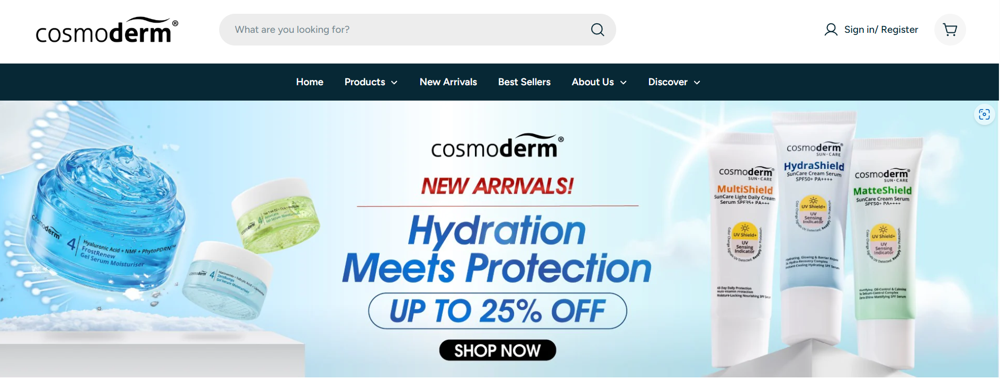
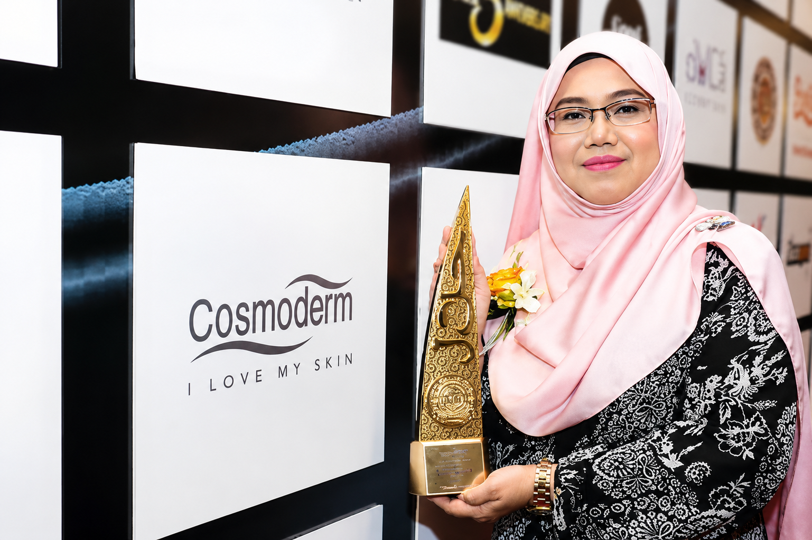

Who is Cosmoderm
Cosmoderm is a Malaysian skincare and personal care brand focused on providing safe, effective and accessible products for consumers. Its product development is guided by science, safety, and an understanding of the local environment — most notably, Malaysia's humid and sunny climate.
The brand positions itself around the idea of healthier, more beautiful skin through formulas that are externally tested rather than simply marketed as safe.

Cosmoderm Owner
Our People
Cosmoderm values its people as an important part of its culture, innovation, and growth.
Our People — Cosmoderm Team
The Product Range
Cosmoderm's catalogue spans cleansers, moisturisers, serums, toners, sunscreens, treatments and skincare sets, organised into collections built around specific active ingredients.
Its eight collections are: Niacinamide + Salicylic Acid, Hyaluronic Acid, Tea Tree Oil, Retinol, Vitamin C, Vitamin E, Micellar, and Rose Water — each targeting different skin concerns and routines.
Trust, Safety & Local Identity
Cosmoderm builds trust through certification and testing rather than claims alone. Its formulas undergo external safety testing, and the brand emphasises its Malaysian roots at every stage of production.
JAKIM Halal Certified
Verified by JAKIM across the product range.
Patch-Tested
21-day HRIPT for leave-on products, 48-hour testing for rinse-off.
100% Malaysian Workforce
Manufactured locally from formulation to production.
GMP-Certified Facility
Manufactured under Good Manufacturing Practice standards.
Recognition
Cosmoderm has been recognised through the Watsons Health, Wellness & Beauty Awards. In 2025, several products received "Most Wanted" awards — a sign that the brand's quality is already well-regarded, even as the digital shopping experience has room to grow (see Main Problems Identified ).